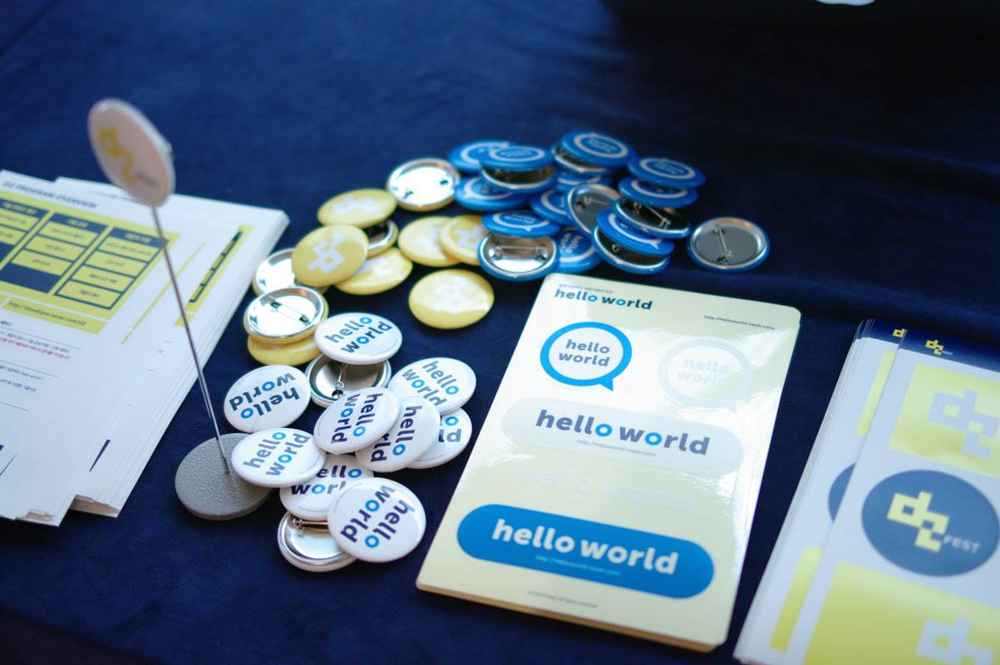
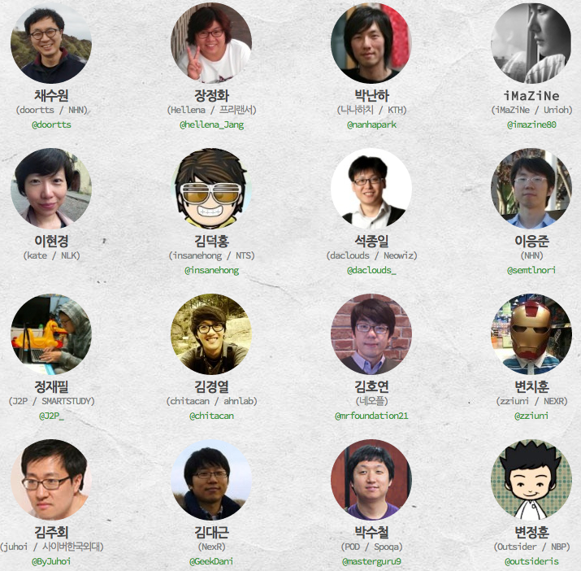
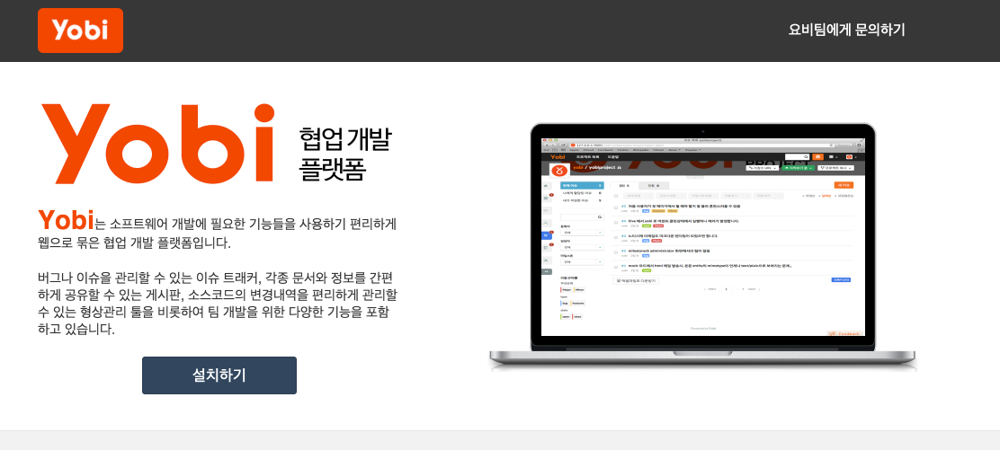
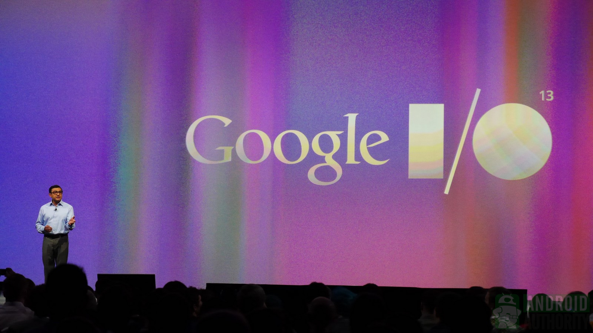
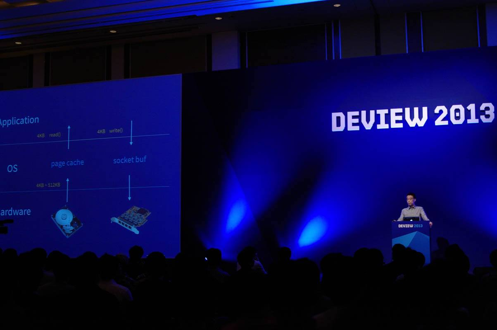
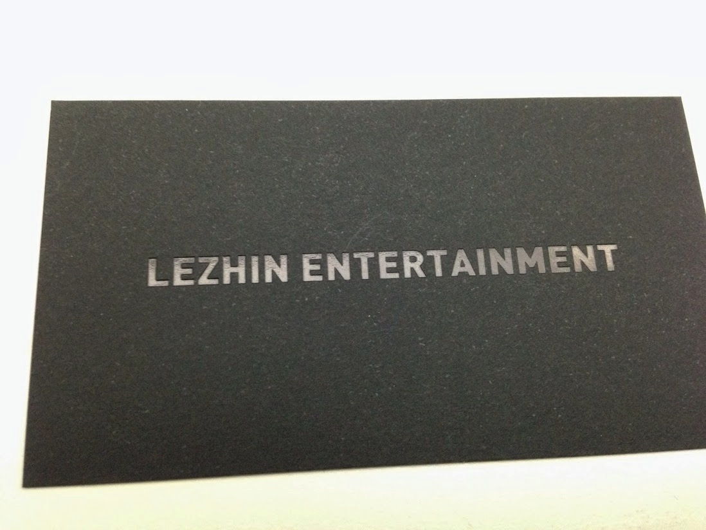
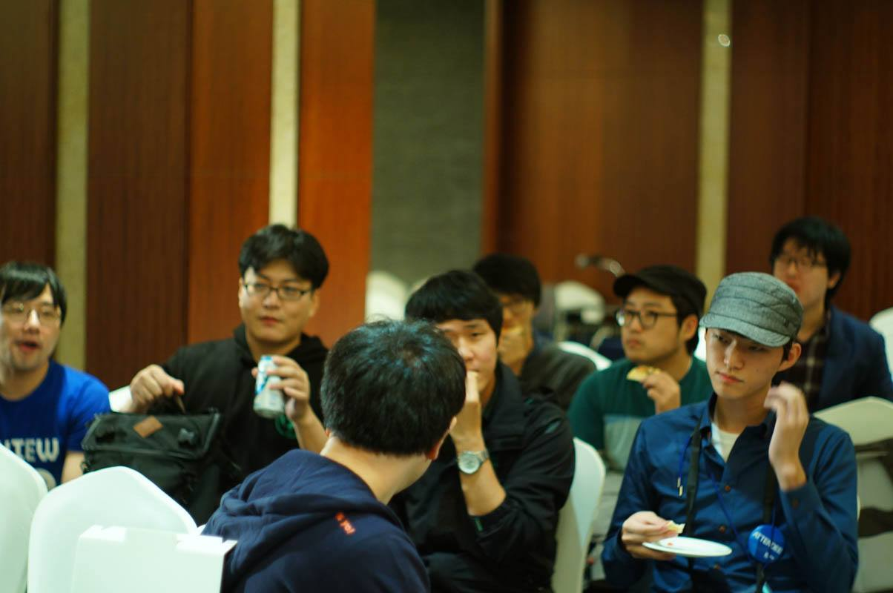
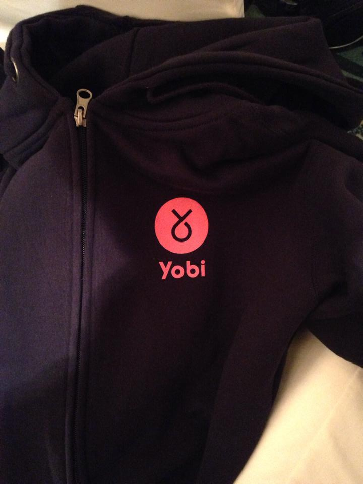
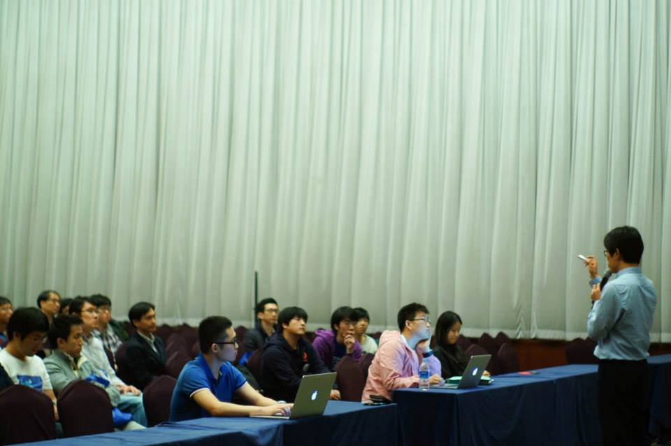
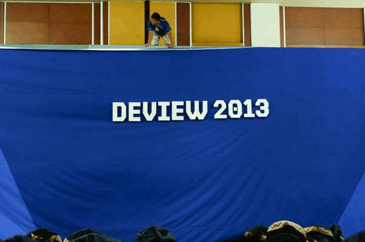

About Author

Insanehong
blog: http://insanehong.kr
twitter: @insanehong
github: insanehong.github.com
- NAVER Corporation, Front-End Engineer(2013~)
- Like Javascript, Dart, HTML5, CSS3,Responsive Web, Haroopress, Frends, Lean Startup, Open Source
- Hackrslab co-founder
- About me http://about.me/insanehong
About this Article
Date Released:
Wednesday, October 16 2013 8:33 PMdeview2013 - 2일간의 행적들
이 글에 실린 Deview 2012에 관련된 모든 사진은 별도의 저작권자가 명시되지 않은 경우 Deview공식 페이스북에 기제된 사진을 사용했음을 먼저 밝힌다.
이 글은 Deview 2013 에 참가자이면서 스텝으로 참가하게된 2일간의 개인적인 행적을 기록으로 남기기 위한 것입니다.
극히 개인적인 생각과 감흥이 여기저기 묻어 있으며 세션에 대한 내용은 거의 없는 관계로 구독을 권고하지 않습니다.
라고 미리 약을 팔아 봅니다.

Organizers - 2012년의 데쟈뷰
지난 10월 14,15일 양일간 사내외로 가장 큰 행사 중 하나인 Deview 2013 이 잠실 롯데 호텔에서 열렸다.
항상 Attendee로서 세션을 들으러 다니다가 올해 Deview 2013 에서는 Attendee + Staff 로서 참여하게 되었다.
사실 처음에는 아무 생각이 없었다. 그날 점심을 얻어먹기 전까지....
잠시 과거로 돌아가 어렴풋이 떠오르는 기억을 되짚어 보니 이건 필히 언젠가 있었던 일이 아니던가?
"제 1회 Nodejs Korea Conference Playnode!"
그렇다. 그때도 나는 아무생각없이 같이 저녁을 먹자는 말에 가벼운 마음으로 나갔던 강남 어느 설렁탕집!!
하지만 집으로 돌아올때는 밥값대신 Organizers 그룹에 포함되어 있는 상황에 봉착(?) 해야만 했었다.

어째든 다시 현재로 돌아와서...
원래 팀에서 2인 1조로 발표를 하기로 되어 스피커로 등록되어 있던터라 사내 스피커 워크샾에서 정말 맛있는 점심을 얻어 먹었었다. 다행히(?) 팀내 세션이 하나 없어지는 관계로 발표는 안하게 되었지만
"홍 대리님!! 스텝으로 도와주실 수 있죠?"
라는 말에 무엇가에 홀리듯 과거의 데쟈뷰를 겪은 듯한 느낌과 함께 승락하게 되었다.
Yobi Project
이번 Deview 2013 에서는 팀에서 진행하는 Project 인 Yobi 의 소개 세션이 포함되어 있었다.
그것도 1일날 첫번째 세션으로 소개 되는 만큼 최대한 할수 있는 만큼 하고 공개되어야 한다는 생각에 개인적으로 많은 욕심을 부리기도 했다.
물론 나혼자만의 욕심은 아니였고 TL님을 포함한 팀원분들 모두 정말 열심히 준비 했다.
(호오옥 시나 이글이 누군가에 읽혀질까봐) 자세한 내용은 밝힐 수는 없지만 지하철 바닥에 앉아서 vi 를 열어야 했던 적도 있었다.
특히 Speeker + Project Release + Staff 조합으로 1인 3역의 유체이탈 화법과 같은 일정을 소화하는 팀분들이 많은 관계로 개발에만 집중할 수 있는 나로서는 부담감이 덜한 대신 최대한 많은 것을 해놓고 공개 시키고 싶었고 그로 인해 그 좀 무리를 했었던거 같다. (물론 내 주위엔 다른 팀원들이 항상 남아계셨…응?)

Deview 2013 Start
사실 잠실 거주자로서 2층이상 올라와 본적이 없기에 위쪽에 이런 공간이 있는지도 몰랐다. 어째든 다행히 늦지 않아 자리를 잡고 앉아서 키노트시간을 기다렸다.
여기서 잠시 쉬어가는 의미로 나의 기억을 되짚어 과거로 가본다.
키노트에 대한 과거의 기억들
사실 지금껏 다녀본 대부분의 컨퍼런스들에서 키노트부터 실망한적이 많았다. 이런말을 해도 되는지 모르겠지만 작년에 열렸던 Deview2012의 키노트 역시 개인적으로 좀 실망스러웠다.
그에 반해 H3 2012 키노트는 후기에서도 밝혔듯이 참 인상적이였다. 대놓고 새로운 서비스 홍보하기!
사실 이건 구글이 항상 하는 방식이다. Google I/O 는 항상 키노트때 빅 군도트라가 나와서 이런 저런 얘기를 하지만 결국 자사 서비스나 하드웨어의 홍보를 한다.

결국 키노트는 컨퍼런스의 개최한 의도와 이를 통해 말하고자 하는 바 혹은 알리고 싶은 내용들을 정확히 전달하는 것이 그 핵심이라고 생각한다.
자 그럼 다시 시간을 되돌려 현재로 돌아가 본다.
Deview 2013의 키노트
과거의 일은 대충 마무리하고 다시 시간은 2013년!!
어째든 곧 사회자 안내에 따라 등장하신 송창현 센터장님
Deview2013 의 키노트는 작년과 다르게 정확한 맥락이 있었다. 그래서 행사참여자들에게 정확히 행사의 취지와 테마를 정확하게 전달할 수 있었다고 생각한다.

이번 키노트의 첫부부은 약간만 시점을 바꿔 생각하면 대기업이든 중소기업이든 스타트업이던 어느곳 하나 예외없이 공통적으로 생각해봐야하는 내용이 있다. 주절주절 다른 말을 할필요가 없다.
딱 한문장으로 요약이 가능했기 때문에…
회사에 있어서 개발자는 어떤 가치를 갖는가?
이 한 문장을 통해서 본인의 휴가를 써가며 어렵게 어렵게 참석하신 개발자분들께 경의를 표하는 바이다. (물론 몇년전 내 모습이기도 하다.)
즉 개발자들의 성장이 곧 회사의 이익으로 돌아오는 법인데 보통은 개발자의 성장은 무시되고 회사의 제품 및 서비스의 성장만을 강요받고 있다는 현실을 잘 집어 주신거 같았다.
뒷부분에서는 이번 Deview 2013이 어떤 theme 인가를 정확히 밝히는 내용들이 이어졌다.
뜬구름 잡듯이 인문학적인 얘기를 주절주절 대는 키노트보다 명확하게 행사의 큰 주제와 핵심적인 내용을 정리해주는 키노트는 작년 H3에 이어 매우 만족스러운 시간이였다.
사람을 만나다
역시 개발자 컨퍼런스는 만남의 장 이다. 평소 보기 힘들었던 지인들이 모두 한곳에 모이는 몇안되는 날이기도 하다.
이날은 FRENDS 맴버들외에도 의외에 인물을 만날수 있었다.
욱사마의 소개로 트위터에서만 보아오고 여기저기서 이름만 들었던 레진코믹스의 홍일점 강소리님을 소개 받았다.
소문대로 미녀 개발자! 라고 약을 팔아 본다. 훗!

그리고 우연치않게 레진코믹스 분들에 속에 꼽사리로 점심까지 얻어먹었다. xguru님 과도 이날 처음 얘기를 해보았다.
맛있는 핫도그를 선사하신 레진코믹스분들께 다시한번 감사의 말을 전합니다. ^
아쉽게 듣지 못한 많은 세션들
1일차는 팀 세션이 2개, 난하님이 2시간, 아웃사이더 까지 총 5시간의 세션들이 이미 관심대상이였기 때문에 나머지 2개만 들으면 되었다.
사실 2번째 세션은 7년여간 나의 밥줄이 되어주었던 PHP관련 얘기를 들어볼가 고민하기도 했다. 하지만 스킵!
물론 세션이 별로라고 생각해서는 아니다. 개인적으로 PHP 로는 7년간의 개발자 생활동안 안해본거 빼고 다해봤다고 생각하고 이제 프론트 개발자로 전향한 시점에서 사람을 만나는것이 더큰 의미가 있었기에 스킵 할 수 밖에 없었다.
그 시간에 rhio 를 비롯한 KTH , 레진 코믹스 분들과 조우 하였기 때문이다.
나머지 한시간인 4번째 시간은 너무 피곤한 나머지 (사실 전날 한숨도 못잤다.) 기억이 나지 않는다. 진심 이날의 한시간은 내 기억에서 완전히 사라졌다.
혹여 길을 지나가다 동공이 흐릿한 큰곰한마리가 해코지 하고 다녔다면 지금 글을 비로서 사과드립니다.
내 주위 지인분은 이번 행사에서는 다른 세미나등에서 한번 발표되었던 내용들로 인하여 뭘 들어야 할지 고민하는 분들이 많았다.
물론 이번 Deview 로 처음 듣는 분들도 계시겠지만 내 주위에 있는 많은 지인들은 이미 들었던 내용이라고 스킵하시는 시간이 많았다고 한다.
2일차는 트렉메니져를 맡고 있는 관계로 3번트렉에만 묶여 있어 다른 트렉 발표는 듣지 못했다. 물론 2일차의 내용은 나와는 크게 관련이 없는 내용들이기도 했다.
그런데… 그런데… 재밌다… 아니 재미있었다…
별기대(?) 사실 관심이 없던 분야임에도 불구하고 집중해서 들었다. 물론 나로서는 신세경(?)인 분야이기에 그랬을수도 있다.
스텝을 하면서 느낀점은 발표를 할때 트렉메니저를 단 한번도 봐주지 않는 스피커가 얼마나 당혹스러운것인지를 느낄수 있었다. (나도 그랬던 적이 많았으리라 하며 넘어가야 할것 같다)
뜻밖에 BOF
1일차 세션이 모두 종료되고 우리팀은 BOF 를 가졋다. "BOF" 가 뭐냐고 물으신다면 그냥 수다시간이라고 보면 된다.
어째듯 이날 yobi 에 관심을 가져주신 많은 분들과 모여 맥주와 피자를 먹으며 이런저런 얘기를 나누었다.
예상외의 인파(?)에 놀라기도 했고 재미있는 얘기를 많이 주고 받아서 잘 마무리 된듯하여 다행스럽기도 하다.

아무도 예상하지 못했겠지만(?) 이날 BOF 에 오신 모든 분들께는 yobi팀에서 준비한 집업 후드 를 나누어 드렸다.
이런게 바로 깨알같은 선물!!

(위 사진은 저작권자이신 Byung Hyun Ahn 님의 허가하에 기제 되었습니다.)
2일차는 구글 엔지니어인 김영진님의 BOF에 참석했다.
나의 목표는 단 한가지 코드리뷰관련해서 어떻게 하고 있는가와 다트에 대해 물어보기 위해서….
이날 BOF 는 무려 1시간 30분이나 진행되어서 관계자분들을 당혹스럽게 하였다.(나도 관계자였단 사실은 중요하지 않았…응?)
아무튼 나로서는 목적달성!
Google의 코드리뷰는 해당 라인을 작성한 사람보다는 최초 해당 코드를 만든 사람의 의견이 더 중요시 되어 진다고 한다. 이후에 변경된 코드들도 결국 최초 설계자의 동의가 없으면 변경되어지지 않게 되기 때문에 여전히 수정된 코드들은 최초 코드 설계자가 가장 중요한 리뷰어라고 한다.

(숨어있는 insane 찾기!)
마무리
어찌어찌 막쓰다보니 에디터상으로는 100줄이 넘어가 버렸다. 물론 편집따위는 하지 않는 나이기에 갑작스럽게 마무리 라는 해딩을 만나 당황스럽기는 글을 쓰는 나도 마찬가지임을 밝힌다. ;;
어째든 2일간의 행사를 참가자 및 관계자로서 잘 마루리 한거 같다. 몸이 피곤한 만큼 잘 끝나서 다행스럽게 생각하고 있다. 물론 이건 어디까지나 극히 개인적인 생각이다.
Deview 이후로 Yobi 데모 사이트 에 많은 분들이 찾아와 주고 계셔서 당혹스럽고 감사한 마음을 전하며 글을 마친다.

Deview 2013을 준비하신 모든 분들께 다시한번 수고하셨단 말을 전합니다.